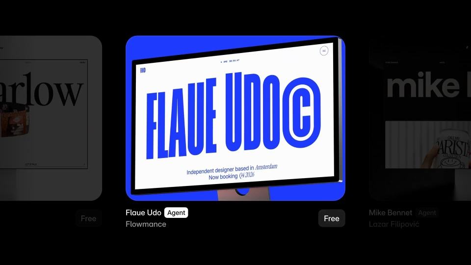
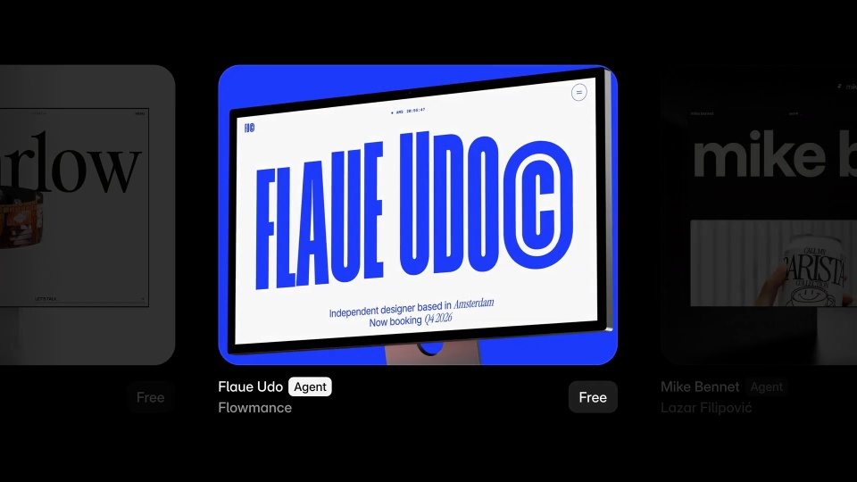
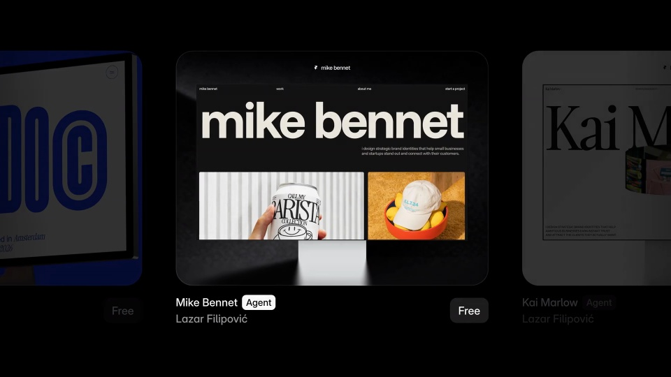
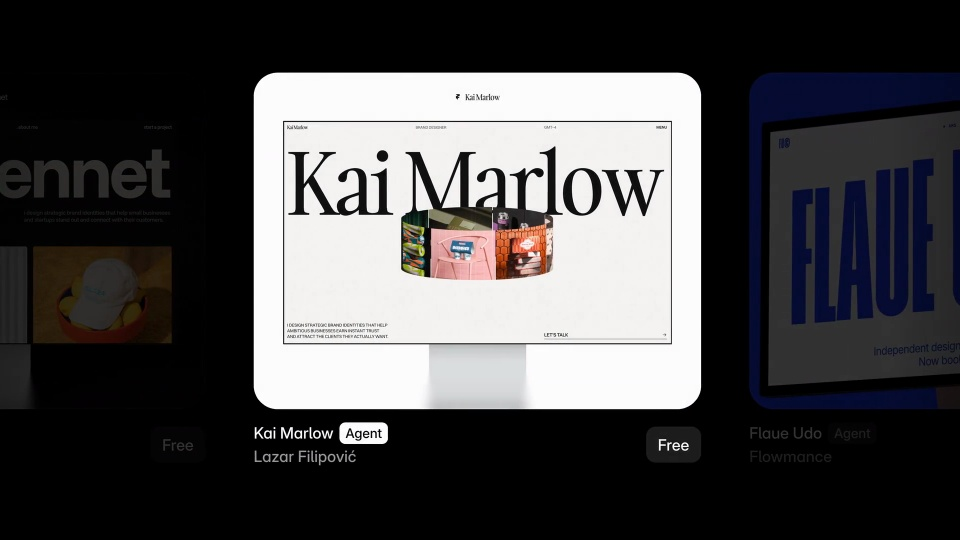

Framer / V280
Framer Agent Templates
三张模板横排，中央卡完整显示，两侧只露一部分并压暗。切换时整条轨道横向滑动，到位后才恢复中央卡的亮度。
构图与编排 可播放 · 可替换内容
整体编排规则示例
查看 HTML 源码
<!doctype html><html lang="zh-CN"><meta charset="utf-8"><meta name="viewport" content="width=device-width,initial-scale=1"><title>Framer Agent Templates · sequence</title><style>html,body{margin:0;width:100%;height:100%;overflow:hidden;background:#000000}canvas{display:block;width:100%;height:100%;object-fit:contain}</style><body data-mode="sequence"><canvas width="1000" height="600"></canvas><script src="data.js"></script><script src="common.js"></script><script src="scene.js"></script><script src="bridge.js"></script></body></html>画面元素中央模板缩略图左右预览卡模板名称Agent 徽标
MOTION LANGUAGE
动作与构图
局部动作 · 构图规则
01
始终给中央模板最高亮度
始终给中央模板最高亮度规则示例
查看 HTML 源码
<!doctype html><html lang="zh-CN"><meta charset="utf-8"><meta name="viewport" content="width=device-width,initial-scale=1"><title>Framer Agent Templates · sequence</title><style>html,body{margin:0;width:100%;height:100%;overflow:hidden;background:#000000}canvas{display:block;width:100%;height:100%;object-fit:contain}</style><body data-mode="clip" data-start="1.15" data-end="2"><canvas width="1000" height="600"></canvas><script src="data.js"></script><script src="common.js"></script><script src="scene.js"></script><script src="bridge.js"></script></body></html>三张模板横排，中央卡完整显示，两侧只露一部分并压暗。切换时整条轨道横向滑动，到位后才恢复中央卡的亮度。
02
边框统一，内容允许有个性
卡片使用同一圆角和相同尺寸，内部保留蓝白大字、黑底作品集和衬线白页三种风格。名称与徽标固定在相同基线上。
03
增加模板时延长轨道
替换缩略图、名称和作者即可；每张留读时间应明显长于滑动时间，首尾排列能自然回到第一张。
SEQUENCE
段落与节奏
点击段落，定位到上方编排示意。




画面参考 · 离散静帧
KEEP THE RELATIONSHIPS
制作其他主题
- 更换三张网页作品，保持尺寸、中央聚焦和循环节奏。
制作约束
中央模板缩略图 / 左右预览卡 / 模板名称 / Agent 徽标
- 三张模板横排，中央卡完整显示，两侧只露一部分并压暗。切换时整条轨道横向滑动，到位后才恢复中央卡的亮度。
- 卡片使用同一圆角和相同尺寸，内部保留蓝白大字、黑底作品集和衬线白页三种风格。名称与徽标固定在相同基线上。
- 替换缩略图、名称和作者即可；每张留读时间应明显长于滑动时间，首尾排列能自然回到第一张。